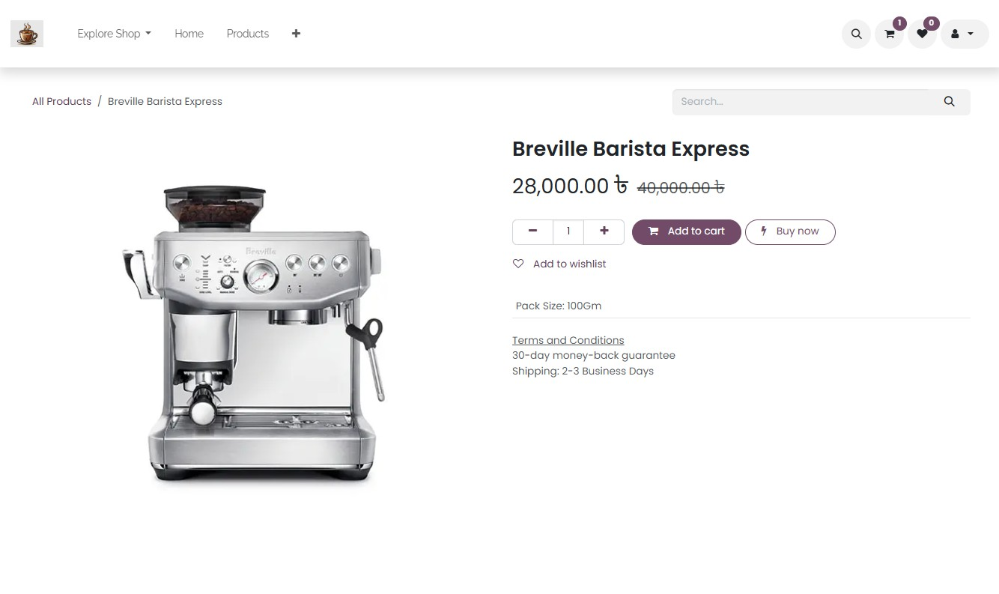
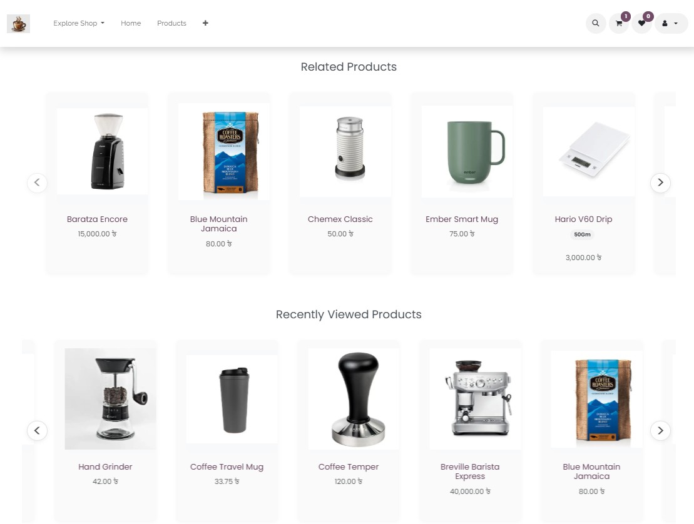
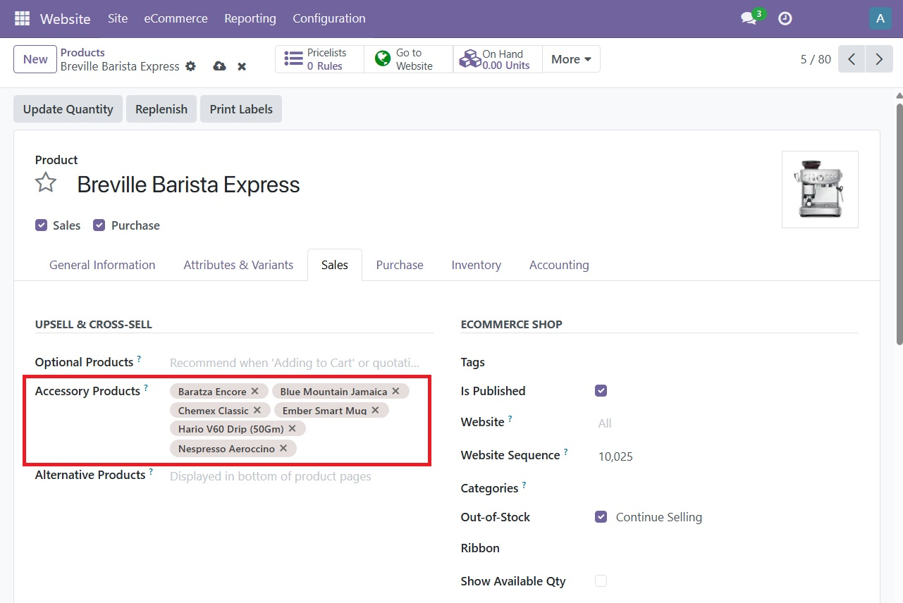
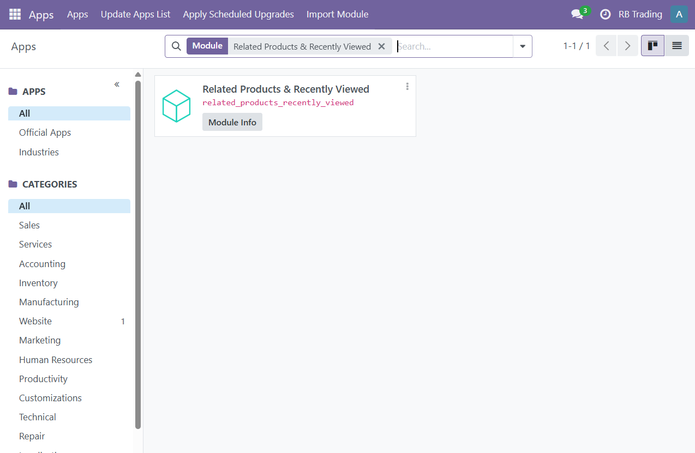

When visitors view any specific product, they don't see any suggestions for related products or a list of recently viewed items. This can lead to missed opportunities for cross-selling and upselling, as well as a less engaging shopping experience.


we added two sections to the product page: "Related Products" and "Recently Viewed Products". These helps visitors discover more items they might be interested in, enhancing their shopping experience and increasing the chances of additional purchases.
When you add or edit an product there is a tab called Sales. In this tab you will find a field called "Accessory Products". You can add multiple products & this will be shown as related products in the product page of the main product.


Simply install the module from the Apps menu. No additional configuration required - it works immediately after installation.